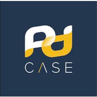

Introducao
Meu nome é Kaiuan, tenho 19 anos e sou natural de Governador
Valadares, Minas Gerais. Atualmente, estou iniciando minha
trajetória profissional na PD Case, uma empresa de Belo Horizonte
com atuação diversificada no mercado. Sou formado em Gestão de
Pessoas, Marketing Digital, Empreendedorismo e Mídias Digitais,
áreas que me proporcionaram uma base sólida para compreender tanto o
comportamento humano quanto as es tratégias digitais. No momento,
estou cursando Análise e Desenvolvimento de Sistemas, desenvolvendo
habilidades técnicas com foco em programação, especialmente em HTML
e CSS. Sou uma pessoa dedicada, em constante busca por aprendizado e
crescimento, com o objetivo de construir uma carreira sólida e
contribuir de forma relevante por onde eu passar.
Por: Kaiuan Oliveira
Minha Cidade
Governador Valadares, em Minas Gerais, é conhecida como a Capital
Mundial do Voo Livre. A cidade atrai pilotos do mundo todo por causa
da famosa Pedra do Ibituruna, uma montanha com mais de 1.100 metros
de altitude que oferece condições ideais para a prática de parapente
e asa-delta. Além do voo livre, Valadares também é cortada pelo Rio
Doce e tem uma rica cultura interiorana com forte influência
mineira. É um destino para quem busca aventura, natureza e
hospitalidade.
Por: Kaiuan Oliveira

PD Case
A PD Case é uma empresa de Belo Horizonte com mais de 30 anos de
atuação no mercado de tecnologia. Especializada no desenvolvimento
de softwares personalizados, consultoria em TI e soluções para o
setor financeiro, a empresa também oferece serviços de outsourcing
e integração de sistemas. Reconhecida pela qualidade e inovação, a
PD Case mantém uma cultura focada em ética, desenvolvimento
profissional e valorização das pessoas.